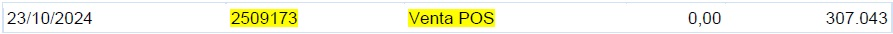
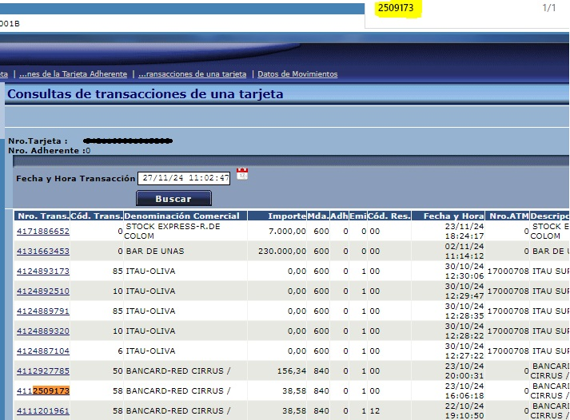
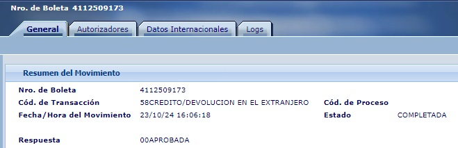
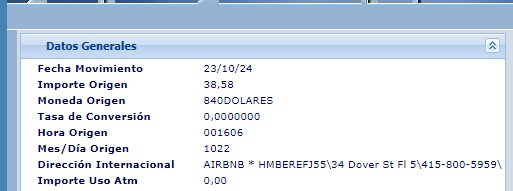

Definición
El proceso de identificación de una devolución online consiste en verificar que una transacción haya sido acreditada correctamente como un reembolso al cliente.

El proceso de identificación de una devolución online consiste en verificar que una transacción haya sido acreditada correctamente como un reembolso al cliente.
Para identificar una devolución online, verificamos en SAC.COM que aparezca como un crédito con la descripción "Venta en POS".
1. Accede a SAC.COM y busca la transacción.
2. La operación debe figurar como un crédito con la descripción "Venta en POS".
3. Ejemplo de registro:

Para confirmar que la devolución corresponde al comercio indicado por el cliente, buscamos el número de comprobante en Bancard Infonet utilizando el filtro y la función Ctrl + F.
1. Ingresa a Bancard Infonet.
2. Filtra la búsqueda utilizando el número de comprobante.
3. Usa la función Ctrl + F para localizar la transacción más rápido.

4. Clic en la transacción seleccionada y nos arroja el detalle.

5. El siguiente paso es verificar en Datos Internacionales (si aplica).
6. Se mostrará el nombre de la página o comercio asociado a la transacción..

"Hemos verificado la información y confirmado los detalles de la transacción. Si requiere alguna otra consulta o necesita asistencia adicional, con gusto le ayudaré. Agradecemos su tiempo y confianza. Le deseo un excelente día."